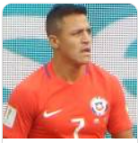
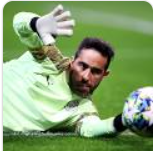
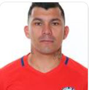
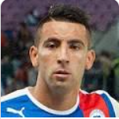

Ben Breneton
Su posición es Delantero. Benjamin Anthony Brereton Díaz, conocido en los medios deportivos como Ben Brereton Díaz, es un futbolista inglés, nacionalizado chileno, que juega como delantero en el Blackburn Rovers de la EFL Championship inglesa. Es internacional absoluto con la Selección de Chile.
Arturo Vidal
Su posición es Mediocampista. Arturo Erasmo Vidal Pardo es un futbolista chileno que se desempeña como centrocampista en el Inter de Milán de la Serie A de Italia. Además es internacional absoluto con la Selección de Fútbol de Chile desde 2007, de la cual es quinto máximo goleador histórico. Integra la Generación Dorada del fútbol chileno.
Alexis Sanchez
Su posición es Delantero. Alexis Alejandro Sánchez Sánchez, conocido deportivamente como Alexis Sánchez, es un futbolista chileno que se desempeña como delantero en el Inter de Milán de la Serie A de Italia y la selección de fútbol de Chile, conocido como niño maravilla apodo que proviene de sus inicios en divisiones inferiores
Claudio Bravo
Su posición es Arquero. Claudio Andrés Bravo Muñoz es un futbolista profesional chileno. Juega como guardameta y su equipo actual es el Real Betis Balompié
Gary Medel
Su posición es Defensa. Gary Alexis Medel Soto es un futbolista profesional chileno que se desempeña como defensa central o volante de contención, actualmente milita en el Bolonia de la Serie A italiana. Además, es internacional absoluto con la selección de Chile desde 2007 y ha sido campeón de la Copa América en 2015 y 2016
Mauricio Isla
Su posición es Defensa. Mauricio Aníbal Isla Isla es un futbolista profesional chileno que se desempeña como lateral o carrilero por la banda derecha y que actualmente milita en Flamengo de Brasil. También es internacional absoluto con la selección de fútbol de Chile desde 2007, con la que ha sido campeón de la Copa América en 2015 y 2016